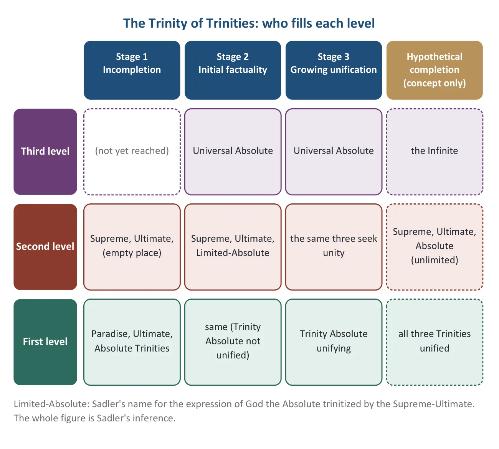

Original: Apêndice XXIII, A Trindade das Trindades (pp. 475–484)
No futuro distante da idade pós-última, a Trindade das Trindades aparece e começa a reunir de novo numa só toda a Deidade existencial e experiencial. Sadler examina o princípio pelo qual as Trindades surgem e revê as três Trindades que a compõem, e depois descreve o processo de formação em quatro estágios. No fim, chega a um quadro em que o Infinito está tanto no extremo causal quanto no extremo do destino da eternidade.
Vista como um todo, desde a Trindade do Paraíso do passado eterno até a Trindade das Trindades do futuro remoto, a história da Deidade parece um único ciclo. A própria revelação nos convida a imaginar a realidade total como uma elipse.
Quando a mente humana procura penetrar o mistério eterno de origem e destino de tudo que é chamado de real, pode ser-lhe útil abordar a questão concebendo a eternidade-infinitude como uma elipse quase sem limite, que é gerada por uma causa absoluta e que funciona nesse círculo universal de diversificação infindável, buscando sempre algum potencial de destino absoluto e infinito.105:0.1
Sadler enuncia o princípio pelo qual uma Trindade surge. Sempre que três Deidades funcionam em relação umas com as outras no mesmo nível de realidade, uma Trindade emerge. Duas fazem uma relação, mas três fazem um sistema, e uma Trindade é exatamente um sistema assim. O Pai, o Filho e o Espírito eternos constituem a Trindade do Paraíso; o Ser Supremo, o corpo dos Arquitetos e o corpo dos Criadores Supremos constituem a Trindade Última; e o Último, unindo-se ao Supremo e ao Consumador do Destino do Universo, constitui a Trindade Absoluta.
Uma Trindade é ela própria Deidade, e por isso também busca uma nova expressão. Quando três Trindades entram em relação funcional, o resultado é um “sistema de sistemas”: a Trindade das Trindades. É nela que a Deidade existencial e a experiencial voltam a reunir-se.
A revelação apresenta a Trindade das Trindades como um postulado dos filósofos.
Os filósofos dos universos postulam uma Trindade das Trindades, uma Trindade Infinita existencial-experiencial, mas não são capazes de visualizar a personalização dela0:12.9
Sadler sustentava que uma Trindade experiencial passa por três fases: limitada, depois factual, depois unificada (ver o Apêndice XIX). Para que a Trindade das Trindades se torne uma realidade factual, as três Trindades que a compõem devem primeiro tornar-se factuais. A Trindade Última torna-se factual no fim da idade presente, e a Trindade Absoluta no fim da sexta idade; assim, a Trindade múltipla só pode tomar forma depois da sexta idade.
Em qualidade, as três Trindades diferem muito.
| Trindade | Existencial/experiencial | Absolutez | Infinitude | Unificação |
|---|---|---|---|---|
| Trindade do Paraíso | Existencial | Absoluta | Infinita | Unificada |
| Trindade Última | Experiencial | Subabsoluta | Subinfinita | Completamente unificada |
| Trindade Absoluta | Experiencial | Absoluta | Subinfinita | Não unificada |
A Trindade Absoluta está numa posição especialmente difícil. A sua função é totalmente absoluta e a sua meta quantitativamente infinita, mas ela própria é subinfinita. O texto também diz que essa Trindade não pode ser classificada com facilidade [106:6.5]. Alcançar toda a sua meta significaria extrair toda a infinitude, de modo que a unificação plena só seria possível no fim da eternidade. Sadler chama isso de uma espécie de impasse.
Seguindo a estrutura de 106:8, Sadler vê a Trindade das Trindades em três camadas. O primeiro nível são as três Trindades; o segundo é a associação do Supremo, do Último e do “Absoluto”; e o terceiro está acima deles.
O primeiro nível consiste de três Trindades; o segundo nível existe como a associação das personalidades da Deidade, compreendendo as personalidades evoluídas-experienciais, factualizadas-experienciais e existenciais-experienciais.106:8.20
O primeiro nível forma-se sem dificuldade. O obstáculo está no segundo. O Supremo e o Último estão presentes, mas, como a Trindade Absoluta não consegue unificar-se, Deus, o Absoluto, não emergiu. O Absoluto da Deidade, existencial e potencial, não pode ocupar o seu lugar ao lado de Deidades experienciais. Sadler chama essa condição de “Estágio Um: o estágio de incompletude”. Se a Trindade do Paraíso, infinita, suprir o que falta, a estrutura pode funcionar, mas não de modo maduro.
Para romper o impasse, Sadler apoia-se numa passagem do texto.
O nosso conceito, contudo, da eterna Trindade do Paraíso, é mantido como uma lembrança, sempre presente, de que a trinitarização da Deidade pode realizar aquilo que, de outro modo, seria inatingível; e por isso é que postulamos o surgimento, em algum momento, do Supremo-Último e uma possível trinitarização e factualização de Deus, o Absoluto.0:12.8
A Trindade do Paraíso veio a existir pela trinitarização do Agente Conjunto pelo Pai e pelo Filho. Por analogia, o que se seguiria se o Supremo e o Último trinitarizassem juntos? Os dois são Deidades subinfinitas, mas provavelmente co-absolutas, de modo que o resultado seria igualmente limitado em universalidade de realidade, mas absoluto em qualidade de ser. Sadler chama esse ser de “a expressão trinitarizada de Deus, o Absoluto”, ou o Absoluto-Limitado. O nome é de Sadler e não aparece no texto.
Quando o Absoluto-Limitado aparece, o segundo nível fica preenchido, mas num sentido inicial e não final, porque o Absoluto-Limitado reúne uma parte significativa dos potenciais do Absoluto da Deidade, não todos eles. Nesse ponto, diz Sadler, o melhor conceito é situar o Absoluto Universal no terceiro nível. Esse é o “Estágio Dois: o estágio de factualidade inicial”. Na imagem de Sadler, garantiu-se uma cabeça de praia na margem da infinitude, mas o abraço da infinitude ainda está muito longe.

No “Estágio Três: o estágio de unificação crescente”, a Trindade Absoluta continua a unificar-se, e Deus, o Absoluto, agora emergido, participa “pessoalmente” do seu próprio crescimento, diferentemente das duas Deidades anteriores a ele. Como o segundo nível é ele próprio uma associação de três Deidades experienciais, busca a unificação como Trindade (a “terceira Trindade experiencial” do Apêndice XXIV), e toda a Trindade múltipla cresce rumo à unidade.
Contudo, os três Absolutos são infinitos e nunca podem ser esgotados. Por mais crescimento que ocorra, a maior parte deles permanece fora da Trindade múltipla. O lugar no terceiro nível continua, portanto, a pertencer ao Absoluto Universal. Aqui Sadler recorda a opinião de um Censor Universal.
pois percebemos que a insondabilidade das relações cósmicas do Absoluto Universal tenderá a crescer, na proporção em que os universos materiais e a sua administração espiritual continuarem a expandir-se.10:8.8
Sadler sublinha que isso não é um impasse, mas uma situação dinâmica de crescimento sem fim.
Por fim, Sadler simplesmente supõe. E se a Trindade das Trindades fosse completamente unificada no sentido total? O primeiro nível conteria três Trindades plenamente unificadas, e o segundo a associação do Supremo, do Último e do Absoluto, um Absoluto sem qualificação alguma. Se os três Absolutos, existencialmente um só, se tornassem um só também experiencialmente e preenchessem o segundo nível, quem ocuparia então o terceiro?
Para comparar, Sadler olha para o outro extremo da eternidade. A revelação descreve um “momento estático hipotético” do passado eterno.
Esse é o momento estático hipotético da eternidade; os factuais estão ainda contidos dentro dos potenciais, e os potenciais ainda não apareceram dentro da infinitude do EU SOU.105:1.5
Sadler chama o fim da eternidade futura de “momento estático-dinâmico hipotético”. Todo potencial teria sido infinitamente experiencializado e esgotado, de modo que a dinâmica da criação, da evolução, da emergência e da supracriação chegaria por fim ao repouso. Nada restaria a fazer. Nesse momento, o terceiro nível conteria não o Absoluto Universal, mas o Infinito. O Infinito encontrado no extremo causal seria encontrado de novo no extremo do destino.
Mas Sadler insiste em que isso vale apenas conceitualmente; como factualidade, permanece eternamente remoto. Em termos da elipse, a curva volta-se para o seu ponto de partida, mas nunca se fecha. O apêndice termina com um breve dito de um Censor Universal.
Apenas a infinitude pode revelar o Pai-Infinito.10:8.9
A revelação fala da estrutura da Trindade das Trindades (três níveis), da deificação de Majeston como manifestação da associação do segundo nível [106:8.20] e do surgimento do Supremo-Último e da possível trinitarização de Deus, o Absoluto [0:12.8]. A divisão em quatro estágios, o nome Absoluto-Limitado, o “momento estático-dinâmico” da eternidade futura e a colocação do Absoluto Universal e do Infinito no terceiro nível são todos inferências de Sadler.